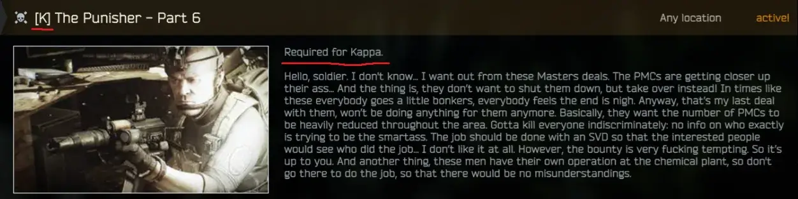

Mod
KappaMarker
- Downloads
- 9,174
- Favourites
- 15
- Mod lists
- 34
KappaMarker
A very simple mod that marks quests required for the Collector.
It adds “Required for Kappa” to quest descriptions and a “[K]” prefix to quest names.

Installation
- Download the mod.
- ⬇️

Alternatively, you can find the 3.10.5 version on GitHub. I haven’t tested it, but it should work on LTS 3.11 too.
Version
2.0.0
SPT ~4.0.0
Fika: unknown
9,174 downloads6.9 KB
4.0.x compatible.
VirusTotal: report 1